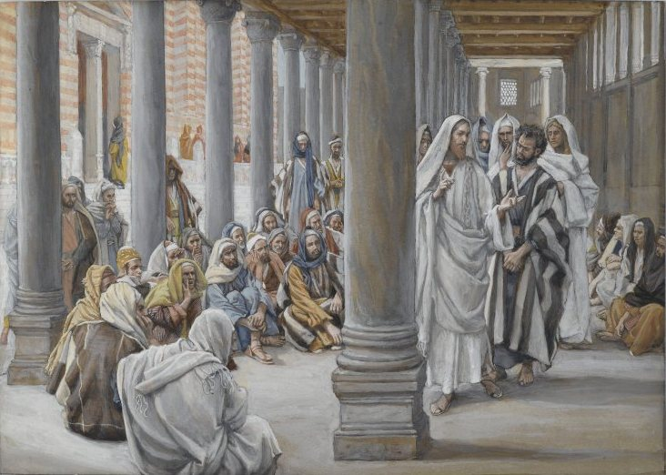

John 10
The Good Shepherd
Jesus is the door to the fold and the Shepherd who lays down his life for the sheep. No one can pluck them out of his hand.
Things to watch for
Keep these questions in the back of your mind as we read. We'll come back to every one of them at the end.
- The doorWhat does it mean that Jesus is the door?
- His voiceHow do his sheep tell his voice from a stranger's?
- Abundant lifeWhat does the thief want, and what does Jesus want for you?
- The Good ShepherdWhat makes Jesus different from a hired hand?
- Eternal securityCan one of Jesus' sheep ever be lost?
- Who Jesus isWho did Jesus claim to be?
Part one
The door
Verses 1–10
There is one way into the fold, and a thief who wants in some other way.
He calls them by name
At night, several shepherds often kept their flocks in one shared stone fold. The porter (the gatekeeper) watched the door till morning.
At sunrise each shepherd stood at the door and called. His own sheep knew his voice, came out, and followed him. The rest didn't move. He went before them. A shepherd leads; he doesn't drive.
Jesus knows you by name. Not as a case number, not as your worst day. By name.
The voice of strangers
Every man hears more than one voice. Some are loud: the old crowd, the dealer's text, the lie in your own head that says “just this once” or “you'll never change.”
How do sheep learn their shepherd's voice? By spending time near him. His voice is in his word. The more you hear it, the faster you'll know when a voice isn't his, and the less it will pull on you.
One way in
Out in the hills, a fold was often just a ring of stacked stones with one gap. There was no gate.
At night the shepherd lay down across the opening. Nothing got in or out without going through him. He was the door.
Notice who can come in: “if any man.” No one is left off the list. And notice what he gets: saved, free to “go in and out,” and fed.
The thief doesn't use the door. Anyone who offers a way to God that goes around Jesus is climbing the wall.
The seven “I am” sayings
When God sent Moses, he gave his name as I AM (Exodus 3:14). In John, Jesus takes those words and fills them in seven times. Two of them are in this chapter:
- The bread of lifeJohn 6:35
- The light of the worldJohn 8:12; 9:5
- The doorJohn 10:7, 9
- The good shepherdJohn 10:11, 14
- The resurrection, and the lifeJohn 11:25
- The way, the truth, and the lifeJohn 14:6
- The true vineJohn 15:1
Each one names something a man can't live without, and says, “That's Me.”
The thief, and the Shepherd
Any man who's been through addiction knows that thief by name. It stole money, time, trust, and family. It tried to kill. It destroyed what it touched, and it always promised more than it gave.
“Be sober, be vigilant; because your adversary the devil, as a roaring lion, walketh about, seeking whom he may devour:”
1 Peter 5:8
Jesus came for the opposite reason. Not just to keep you alive, but to give you life that overflows. “More abundantly” means more than enough.
Part two
The Good Shepherd
Verses 11–21
The hired man runs when the wolf comes. The Shepherd stays, and dies for the sheep.
The hireling and the Shepherd
The hireling
Works for pay
The sheep aren't his. When the wolf comes, he does the math, and he runs. “He careth not for the sheep.”
The Good Shepherd
Owns the sheep
They belong to him. When the wolf comes, he steps between it and them, and pays with his own life.
God had promised long before that he would shepherd his people himself:
“For thus saith the Lord GOD; Behold, I, even I, will both search my sheep, and seek them out.”
Ezekiel 34:11
Most of us have known hirelings: people who were around while it paid, and gone when it got hard. Jesus isn't one of them. He doesn't run.
Other sheep
“This fold” was Israel. The other sheep are the Gentiles, people from every other nation. That's most of us in this room.
Remember the low wall in the temple that kept Gentiles out (John 2)? Paul wrote that Jesus tore that kind of wall down:
“For he is our peace, who hath made both one, and hath broken down the middle wall of partition between us;”
Ephesians 2:14
One flock, one Shepherd. No second-class sheep.
Nobody took his life
He laid it down
The soldiers, the priests, and Pilate all thought they were in control. They weren't. He gave his life on purpose.
He took it again
Three days later he took his life back up, just as he said. Only God can say “I have power” over his own death.
Jesus wasn't a victim who got caught. He was a Shepherd who chose to die for his sheep, for you, and then rose to lead them.
What do you do with a man like this?
A man who says “I lay down my life, and I'll take it again” is either out of his mind, or something worse, or exactly who he says he is. The crowd split three ways:
- “He hath a devil”(then why does he do only good?)
- “And is mad”(madmen don't talk like this)
- “Can a devil open the eyes of the blind?”
The blind man from chapter 9 was still walking around Jerusalem, seeing. That's hard evidence to argue with.
Part three
In his hand
Verses 22–42
Winter in the temple. They ask him to speak plainly, and he does.
The feast of the dedication

- Between the TestamentsA Greek king sets up a pagan altar in the temple
- Three years laterThe Jews retake it, cleanse it, and dedicate it again
- Jesus' dayJesus walks in the temple at the feast
The rededication was celebrated for eight days every winter, about December. It came to be called the feast of Lights, and Jewish families still keep it today as Hanukkah.
Solomon's porch was a long covered walkway of columns along the east side of the temple courts, a place out of the winter wind. A feast about a temple set apart for God, and the Son that the Father “sanctified,” set apart (10:36), is walking right through it.
Not his sheep?
Is Jesus saying these men couldn't believe, that the door was shut on them? No. Look at what he said in this same chapter:
He was still pleading with them to believe. They had seen the works and heard the words, and they refused. They weren't his sheep because they wouldn't come through the door. The door was open to them, and it's open to any man today.
Held twice
Count the promises: they shall never perish. No man can pluck them out of My hand. No man can pluck them out of My Father's hand.
Who's holding whom? Your grip on Jesus will slip some days. His grip on you won't. That's what eternal security means: once a man is saved, he's held by God, not by his own strength.
That's not permission to sin. It's the reason a man who stumbles can get back up. A bad day doesn't pluck you out of his hand. Get up, and keep following.
Sealed and secure
The rest of the New Testament says the same thing. The moment a man believes, the Holy Spirit moves in and seals him as God's own:
“In whom ye also trusted, after that ye heard the word of truth, the gospel of your salvation: in whom also after that ye believed, ye were sealed with that holy Spirit of promise,”
Ephesians 1:13
“For I am persuaded, that neither death, nor life, nor angels, nor principalities, nor powers, nor things present, nor things to come, Nor height, nor depth, nor any other creature, shall be able to separate us from the love of God, which is in Christ Jesus our Lord.”
Romans 8:38–39
Notice “any other creature.” That includes you. You can't pluck yourself out either.
“One”
The Greek word is hen, “one” in the sense of one thing, not one person. Jesus and the Father are two persons, yet one God: the same power, the same nature, the same hand holding the sheep.
His enemies understood him perfectly. Look what they did next.
“Ye are gods”?
Psalm 82:6
“I have said, Ye are gods; and all of you are children of the most High.”
John 10:36
“Say ye of him, whom the Father hath sanctified, and sent into the world, Thou blasphemest; because I said, I am the Son of God?”
Psalm 82 speaks to Israel's judges. They were called “gods” only because they judged in God's place, and the psalm goes on to say they will die like men.
Jesus argues from the lesser to the greater: if Scripture can use that word for ordinary men who merely received God's word, how much more can the One the Father set apart and sent call himself the Son of God? He isn't backing down from his claim. He's showing they have no case.
Back where it began
Jesus goes back across the Jordan, to the spot where John had baptized and first pointed to him: “Behold the Lamb of God” (John 1:28–29).
Look at what the people there said about John: “John did no miracle: but all things that John spake of this man were true.” No signs, no wonders. He just told the truth about Jesus, and years later people were still believing because of it.
You may never do anything flashy. Tell the truth about Jesus anyway. It's still bearing fruit long after you've said it.
Points to remember
- The door“By me if any man enter in, he shall be saved” 10:9Jesus is the only way in, and the way is open to any man.
- His voice“The sheep follow him: for they know his voice” 10:4Stay close to him and his word, and the strangers' voices lose their pull.
- Abundant life“That they might have it more abundantly” 10:10The thief steals, kills, and destroys. Jesus gives life that overflows.
- The Good Shepherd“The good shepherd giveth his life for the sheep” 10:11The hireling runs. Jesus stayed, and laid down his life on purpose.
- Eternal security“They shall never perish” 10:28You're held in his hand and the Father's. No one can pluck you out.
- Who Jesus is“I and my Father are one” 10:30Jesus claimed to be God, and his enemies understood him exactly.
Question 1 of 6
The doorWhat does it mean that Jesus is the door?
What verses tell us about this?
Answer
There's one way into God's fold, and it's Jesus. Anyone who tries another way is a thief climbing the wall. But the door is open to “any man” who comes through it, and those who do are saved, free, and fed: they “go in and out, and find pasture.”
Question 2 of 6
His voiceHow do his sheep tell his voice from a stranger's?
What verses tell us about this?
Answer
By knowing him. Sheep learn their shepherd's voice by being near him every day. His voice calls you by name, leads instead of drives, and always goes ahead of you. A stranger's voice shames, lies, and scatters. The more time you spend in his word, the quicker you'll know which is which.
Question 3 of 6
Abundant lifeWhat does the thief want, and what does Jesus want for you?
What verses tell us about this?
“Be sober, be vigilant; because your adversary the devil, as a roaring lion, walketh about, seeking whom he may devour:”
1 Peter 5:8
Answer
The thief wants to steal from you, kill you, and destroy everything you love, and he always dresses it up as a good time. Jesus wants you to have life, and more than enough of it. One takes everything; the other gives everything, even his own life.
Question 4 of 6
The Good ShepherdWhat makes Jesus different from a hired hand?
What verses tell us about this?
Answer
The hireling works for pay and runs when the wolf shows up, because the sheep aren't his. The sheep belong to Jesus. He knows each one, and he didn't run: he laid down his life for them on purpose, and took it up again.
Question 5 of 6
Eternal securityCan one of Jesus' sheep ever be lost?
What verses tell us about this?
“All that the Father giveth me shall come to me; and him that cometh to me I will in no wise cast out.”
John 6:37
Answer
No. Jesus said his sheep “shall never perish.” They're held in his hand and in the Father's hand, and no one can pluck them out. A believer is sealed by the Holy Spirit the moment he believes. Your grip may slip, but his never does. That's not a license to sin; it's the reason you can get back up.
Question 6 of 6
Who Jesus isWho did Jesus claim to be?
What verses tell us about this?
Answer
God the Son. “I and my Father are one” means one in nature and power. His enemies knew exactly what he meant: “thou, being a man, makest thyself God.” He didn't correct them. He pointed to his works as proof, and those works are still calling men to believe.
Prayer requests
What can we pray about for you today?
“The LORD is my shepherd; I shall not want.”
Psalm 23:1